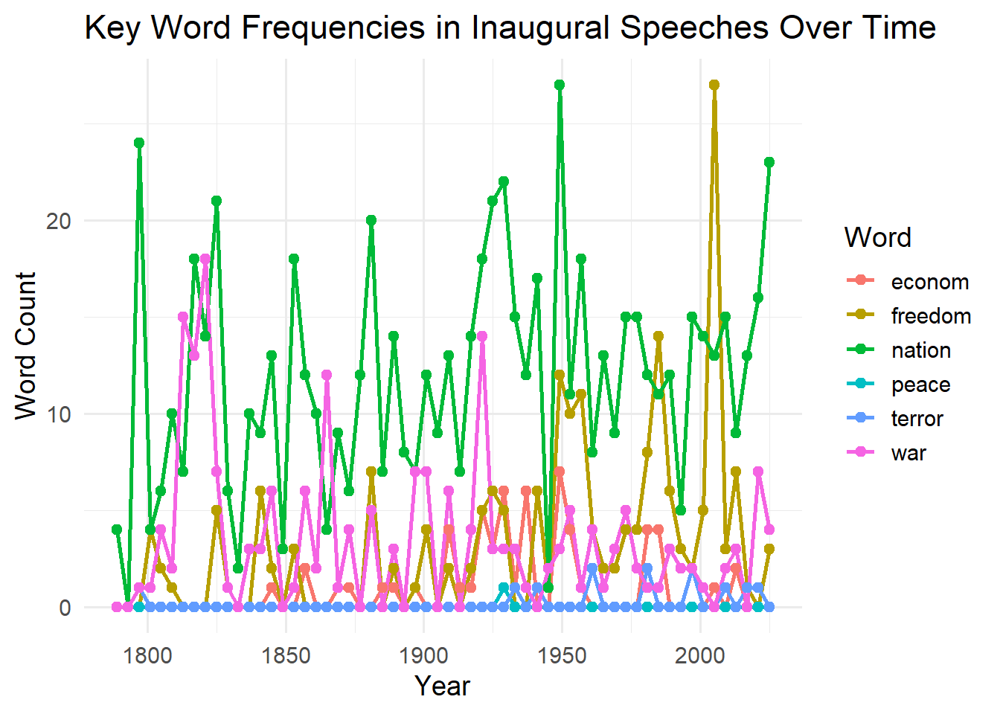
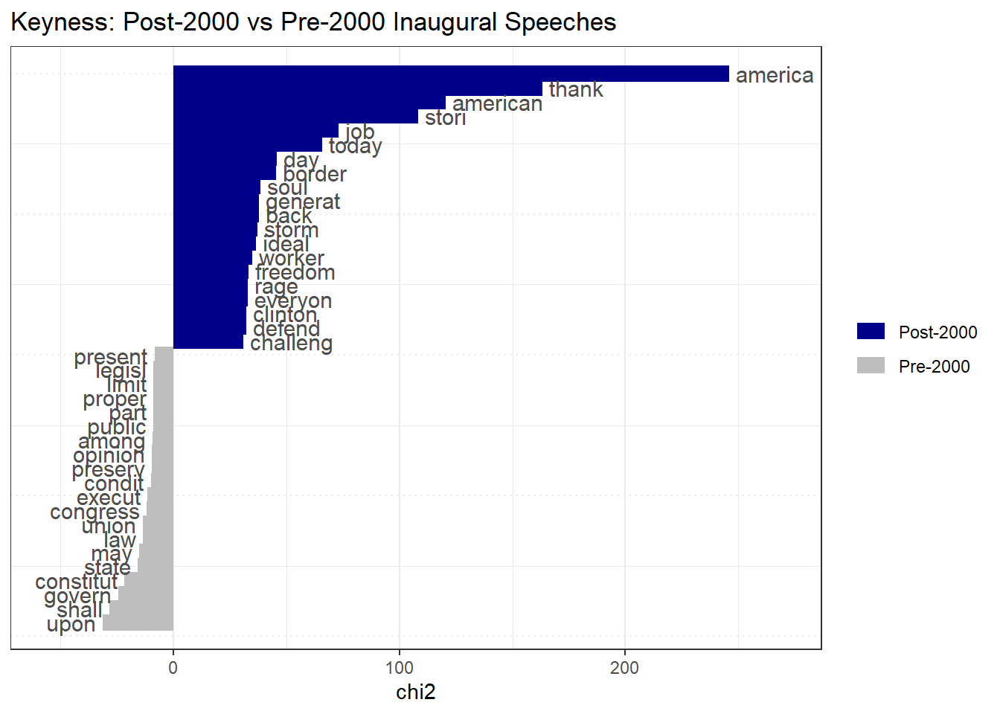
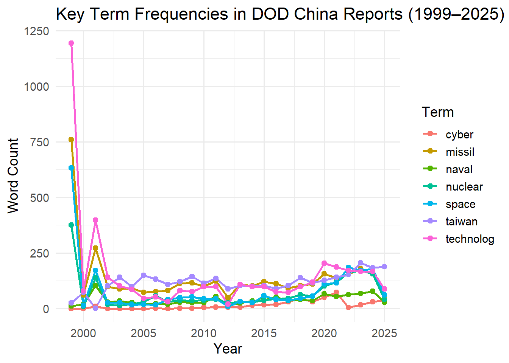
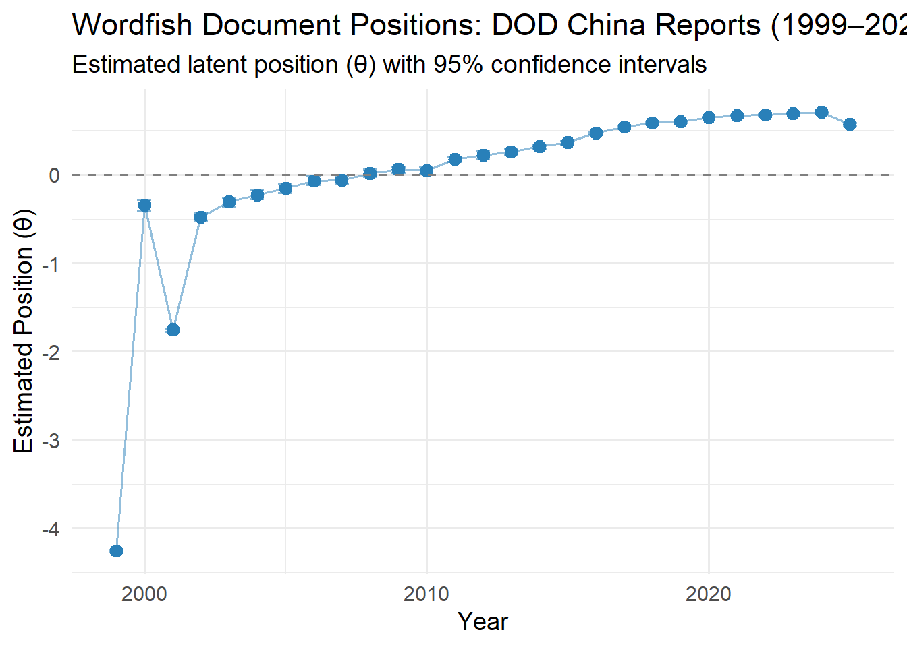
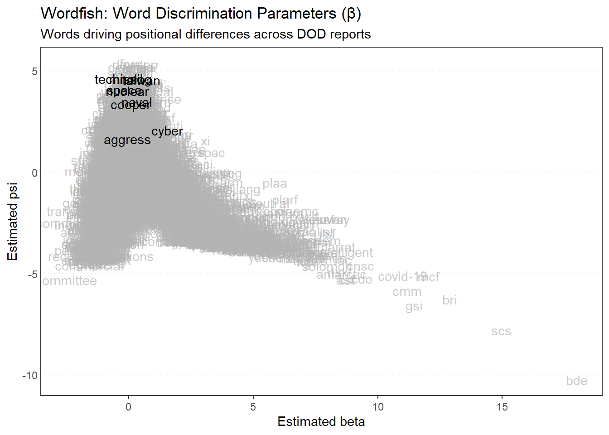
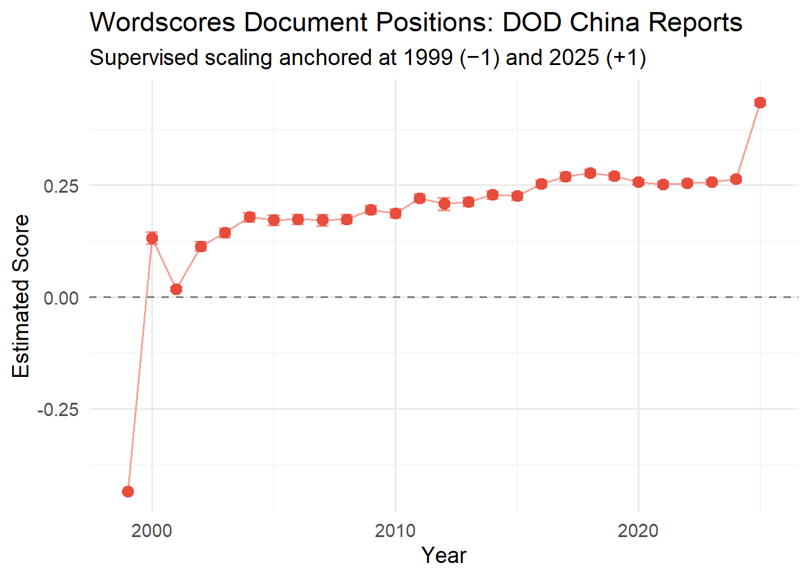
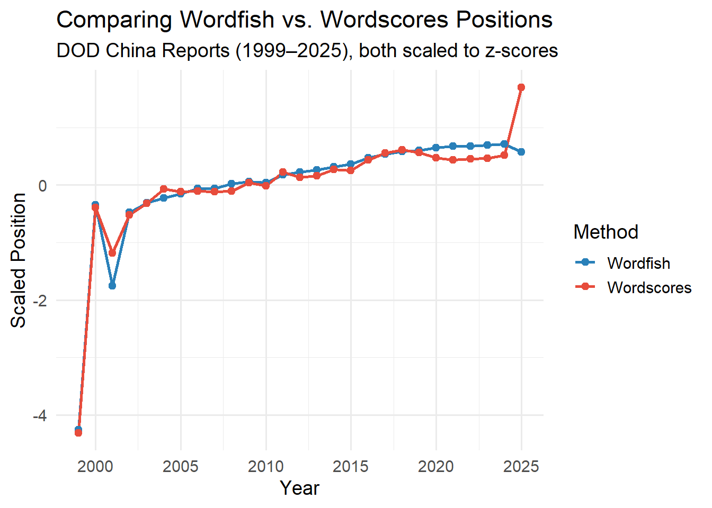

Code
library(quanteda)
library(quanteda.textstats)
library(quanteda.textplots)
library(quanteda.textmodels)
library(tidyverse)
library(pdftools)
library(ggplot2)Muhammad Al Hasib
Corpus consisting of 60 documents, showing 10 documents:
Text Types Tokens Sentences Year President FirstName
1789-Washington 625 1537 24 1789 Washington George
1793-Washington 96 147 5 1793 Washington George
1797-Adams 826 2577 37 1797 Adams John
1801-Jefferson 717 1923 43 1801 Jefferson Thomas
1805-Jefferson 804 2380 45 1805 Jefferson Thomas
1809-Madison 535 1261 21 1809 Madison James
1813-Madison 541 1302 33 1813 Madison James
1817-Monroe 1040 3677 121 1817 Monroe James
1821-Monroe 1259 4886 131 1821 Monroe James
1825-Adams 1003 3147 75 1825 Adams John Quincy
Party
none
none
Federalist
Democratic-Republican
Democratic-Republican
Democratic-Republican
Democratic-Republican
Democratic-Republican
Democratic-Republican
Democratic-RepublicanDocument-feature matrix of: 60 documents, 5,540 features (89.45% sparse) and 4 docvars.
features
docs fellow-citizen senat hous repres among vicissitud incid life
1789-Washington 1 1 2 2 1 1 1 1
1793-Washington 0 0 0 0 0 0 0 0
1797-Adams 3 1 3 3 4 0 0 2
1801-Jefferson 2 0 0 1 1 0 0 1
1805-Jefferson 0 0 0 0 7 0 0 2
1809-Madison 1 0 0 1 0 1 0 1
features
docs event fill
1789-Washington 2 1
1793-Washington 0 0
1797-Adams 0 0
1801-Jefferson 0 0
1805-Jefferson 1 0
1809-Madison 0 1
[ reached max_ndoc ... 54 more documents, reached max_nfeat ... 5,530 more features ]# Track key words over time
words_time <- dfm_inaug %>%
dfm_select(pattern = c("freedom", "nation", "war", "peace", "econom*", "terror*")) %>%
convert(to = "data.frame") %>%
bind_cols(docvars(dfm_inaug)) %>%
pivot_longer(cols = c("freedom", "nation", "war", "peace", "econom", "terror"),
names_to = "word", values_to = "count") %>%
group_by(Year, word) %>%
summarise(count = sum(count), .groups = "drop")
ggplot(words_time, aes(x = Year, y = count, color = word)) +
geom_line(size = 1) +
geom_point(size = 2) +
labs(title = "Key Word Frequencies in Inaugural Speeches Over Time",
x = "Year", y = "Word Count", color = "Word") +
theme_minimal(base_size = 14)
# Compare post-2000 vs pre-2000 speeches
dfm_inaug_grouped <- dfm_inaug %>%
dfm_group(groups = ifelse(docvars(dfm_inaug, "Year") >= 2000,
"Post-2000", "Pre-2000"))
keyness <- textstat_keyness(dfm_inaug_grouped, target = "Post-2000")
textplot_keyness(keyness, n = 20) +
labs(title = "Keyness: Post-2000 vs Pre-2000 Inaugural Speeches")
# Cosine similarity between speeches
dfm_inaug_tfidf <- dfm_tfidf(dfm_inaug)
sim_matrix <- textstat_simil(dfm_inaug_tfidf, method = "cosine")
# Show most similar speech pairs
sim_df <- as.data.frame(as.matrix(sim_matrix)) %>%
rownames_to_column("doc1") %>%
pivot_longer(-doc1, names_to = "doc2", values_to = "similarity") %>%
filter(doc1 < doc2) %>%
arrange(desc(similarity)) %>%
head(10)
knitr::kable(sim_df, caption = "Top 10 Most Similar Inaugural Speech Pairs (Cosine Similarity)")| doc1 | doc2 | similarity |
|---|---|---|
| 1817-Monroe | 1821-Monroe | 0.3674328 |
| 1837-VanBuren | 1841-Harrison | 0.3160154 |
| 1841-Harrison | 1845-Polk | 0.3031177 |
| 2001-Bush | 2021-Biden | 0.2960761 |
| 1897-McKinley | 1909-Taft | 0.2931335 |
| 1825-Adams | 1845-Polk | 0.2901419 |
| 1837-VanBuren | 1853-Pierce | 0.2897037 |
| 1841-Harrison | 1857-Buchanan | 0.2893932 |
| 1845-Polk | 1857-Buchanan | 0.2873895 |
| 1889-Harrison | 1897-McKinley | 0.2860167 |
# Set path to USDOD folder
dod_path <- "USDOD/USDOD/"
# List all PDF files
pdf_files <- list.files(dod_path, pattern = "\\.pdf$|\\.PDF$",
full.names = TRUE, ignore.case = TRUE)
# Extract year from filenames
years <- str_extract(basename(pdf_files), "^[0-9]{4}")
# Remove files where year could not be extracted
valid <- !is.na(years)
pdf_files <- pdf_files[valid]
years <- years[valid]
# Read PDF text
dod_texts <- map_chr(pdf_files, function(f) {
tryCatch(
paste(pdf_text(f), collapse = " "),
error = function(e) ""
)
})
# Build corpus
corp_dod <- corpus(dod_texts,
docnames = paste0("DOD_", years),
docvars = data.frame(year = as.integer(years)))
summary(corp_dod)Corpus consisting of 27 documents, showing 27 documents:
Text Types Tokens Sentences year
DOD_1999 16068 301499 13120 1999
DOD_2000 2990 15078 584 2000
DOD_2001 14864 186150 7583 2001
DOD_2002 4178 25908 1174 2002
DOD_2003 4068 25848 1138 2003
DOD_2004 4056 25091 1016 2004
DOD_2005 3730 20326 880 2005
DOD_2006 4002 21855 705 2006
DOD_2007 3669 18144 571 2007
DOD_2008 4651 26390 810 2008
DOD_2009 5124 31910 1061 2009
DOD_2010 5002 33621 993 2010
DOD_2011 5400 35578 1140 2011
DOD_2012 3156 14293 586 2012
DOD_2013 4955 30563 977 2013
DOD_2014 4960 31111 1021 2014
DOD_2015 5335 34712 1118 2015
DOD_2016 5524 38929 1331 2016
DOD_2017 5080 33380 1124 2017
DOD_2018 5759 45684 1475 2018
DOD_2019 5868 45760 1437 2019
DOD_2020 7373 74334 2807 2020
DOD_2021 7727 79375 2798 2021
DOD_2022 8086 83275 2734 2022
DOD_2023 9113 95483 3205 2023
DOD_2024 8633 94628 3241 2024
DOD_2025 5986 43945 1345 2025Document-feature matrix of: 27 documents, 21,136 features (82.83% sparse) and 1 docvar.
features
docs u.s national securiti commercial concerns people’s republic volume
DOD_1999 1676 12 35 34 9 8 9 410
DOD_2000 2 0 2 0 0 1 1 0
DOD_2001 651 5 10 1 1 0 0 0
DOD_2002 35 0 1 0 0 1 1 0
DOD_2003 41 0 2 0 0 1 1 0
DOD_2004 57 0 2 0 0 1 1 0
features
docs select committee
DOD_1999 1368 911
DOD_2000 5 0
DOD_2001 92 2
DOD_2002 4 0
DOD_2003 5 0
DOD_2004 2 0
[ reached max_ndoc ... 21 more documents, reached max_nfeat ... 21,126 more features ]key_terms <- c("taiwan", "nuclear", "cyber", "space", "missil", "naval", "technolog")
term_trends <- dfm_dod %>%
dfm_select(pattern = key_terms) %>%
convert(to = "data.frame") %>%
bind_cols(docvars(dfm_dod)) %>%
pivot_longer(cols = all_of(key_terms),
names_to = "term", values_to = "count") %>%
group_by(year, term) %>%
summarise(count = sum(count), .groups = "drop")
ggplot(term_trends, aes(x = year, y = count, color = term)) +
geom_line(size = 1) +
geom_point(size = 2) +
labs(title = "Key Term Frequencies in DOD China Reports (1999–2025)",
x = "Year", y = "Word Count", color = "Term") +
theme_minimal(base_size = 14)
Wordfish is an unsupervised text scaling model used to estimate the ideological or positional placement of documents along a single latent dimension — without requiring any reference texts or prior labels. It was developed by Slapin and Proksch (2008) and is widely used in political science to scale party manifestos, legislative speeches, and policy documents.
The model assumes that word counts follow a Poisson distribution and estimates:
In the context of DOD reports, Wordfish can reveal how the rhetorical framing of China’s military threat has shifted across administrations and years.
Call:
textmodel_wordfish.dfm(x = dfm_dod_trim)
Estimated Document Positions:
theta se
DOD_1999 -4.25608 0.006037
DOD_2000 -0.34654 0.032778
DOD_2001 -1.75912 0.010987
DOD_2002 -0.47954 0.025796
DOD_2003 -0.30698 0.024718
DOD_2004 -0.22540 0.024274
DOD_2005 -0.15133 0.026590
DOD_2006 -0.06551 0.024318
DOD_2007 -0.05734 0.026522
DOD_2008 0.01742 0.020930
DOD_2009 0.05753 0.018500
DOD_2010 0.04382 0.018879
DOD_2011 0.17818 0.015449
DOD_2012 0.22465 0.023589
DOD_2013 0.25997 0.015148
DOD_2014 0.31948 0.013897
DOD_2015 0.36385 0.012252
DOD_2016 0.47306 0.009468
DOD_2017 0.53896 0.008715
DOD_2018 0.58566 0.006508
DOD_2019 0.60045 0.006250
DOD_2020 0.65049 0.004200
DOD_2021 0.67498 0.003768
DOD_2022 0.67712 0.003633
DOD_2023 0.69559 0.003186
DOD_2024 0.71163 0.003105
DOD_2025 0.57500 0.007353
Estimated Feature Scores:
u.s national securiti commercial concerns people’s republic select
beta -0.3585 -0.25621 -0.3115 -1.587 -1.184 0.0574 -0.3722 -0.9279
psi 4.4928 -0.08912 0.7598 -4.577 -4.175 0.4015 -0.8602 1.8943
committee united states congress session mr california chairman
beta -2.527 -1.3788 -1.3846 0.6147 -0.3263 -0.05072 -0.6709 -0.177
psi -5.291 -0.4331 -0.4568 4.1999 0.2331 1.20676 -0.8422 2.332
januari commit committe whole hous state union order print
beta -0.1596 -0.09556 -0.8294 -0.02731 -0.6014 -0.1991 -0.1836 -0.1026 -0.4951
psi 2.1517 2.14976 2.1194 0.55225 1.0203 4.6012 1.3742 2.7890 -1.6720
subject review part pursuant resolut
beta -0.5503 -0.9793 -0.2744 -0.3703 -0.00104
psi 0.9820 1.3082 3.3001 0.4553 1.74493# Extract document positions
wf_positions <- data.frame(
document = docnames(dfm_dod_trim),
year = docvars(dfm_dod_trim, "year"),
theta = wf_model$theta,
se = wf_model$se.theta
)
ggplot(wf_positions, aes(x = year, y = theta)) +
geom_point(size = 3, color = "#2980b9") +
geom_errorbar(aes(ymin = theta - 1.96 * se,
ymax = theta + 1.96 * se),
width = 0.5, color = "#2980b9", alpha = 0.6) +
geom_line(color = "#2980b9", alpha = 0.5) +
geom_hline(yintercept = 0, linetype = "dashed", color = "gray50") +
labs(title = "Wordfish Document Positions: DOD China Reports (1999–2025)",
subtitle = "Estimated latent position (θ) with 95% confidence intervals",
x = "Year", y = "Estimated Position (θ)") +
theme_minimal(base_size = 14)
# Plot word features by position
textplot_scale1d(wf_model,
margin = "features",
highlighted = c("taiwan", "nuclear", "cyber",
"space", "missil", "technolog",
"naval", "aggress", "cooper")) +
labs(title = "Wordfish: Word Discrimination Parameters (β)",
subtitle = "Words driving positional differences across DOD reports")
Position comparison across documents can be achieved using several scaling methods in quanteda:
Already run above. Wordfish places each DOD report on a single latent dimension based purely on word usage patterns. Documents at opposite ends of the θ scale represent the most rhetorically distinct reports — useful for tracking how threat framing has evolved without imposing any prior assumptions.
Wordscores requires reference texts with known positions. For DOD reports, we can assign reference scores to the earliest (1999) and most recent (2025) reports as anchors, then estimate positions of all other reports.
# Assign reference scores: 1999 = -1 (baseline), 2025 = +1 (most recent)
ref_scores <- rep(NA, ndoc(dfm_dod_trim))
ref_scores[docvars(dfm_dod_trim, "year") == min(docvars(dfm_dod_trim, "year"))] <- -1
ref_scores[docvars(dfm_dod_trim, "year") == max(docvars(dfm_dod_trim, "year"))] <- 1
ws_model <- textmodel_wordscores(dfm_dod_trim, y = ref_scores)
# Predict scores for all documents
ws_pred <- predict(ws_model, se.fit = TRUE, newdata = dfm_dod_trim)
ws_positions <- data.frame(
year = docvars(dfm_dod_trim, "year"),
score = ws_pred$fit,
se = ws_pred$se.fit
)
ggplot(ws_positions, aes(x = year, y = score)) +
geom_point(size = 3, color = "#e74c3c") +
geom_errorbar(aes(ymin = score - 1.96 * se,
ymax = score + 1.96 * se),
width = 0.5, color = "#e74c3c", alpha = 0.6) +
geom_line(color = "#e74c3c", alpha = 0.5) +
geom_hline(yintercept = 0, linetype = "dashed", color = "gray50") +
labs(title = "Wordscores Document Positions: DOD China Reports",
subtitle = "Supervised scaling anchored at 1999 (−1) and 2025 (+1)",
x = "Year", y = "Estimated Score") +
theme_minimal(base_size = 14)
# Combine both estimates for comparison
comparison_df <- data.frame(
year = wf_positions$year,
Wordfish = scale(wf_positions$theta)[, 1],
Wordscores = scale(ws_positions$score)[, 1]
) %>%
pivot_longer(cols = c("Wordfish", "Wordscores"),
names_to = "method", values_to = "position")
ggplot(comparison_df, aes(x = year, y = position, color = method)) +
geom_line(size = 1) +
geom_point(size = 2) +
scale_color_manual(values = c("Wordfish" = "#2980b9", "Wordscores" = "#e74c3c")) +
labs(title = "Comparing Wordfish vs. Wordscores Positions",
subtitle = "DOD China Reports (1999–2025), both scaled to z-scores",
x = "Year", y = "Scaled Position", color = "Method") +
theme_minimal(base_size = 14)
The comparison plot reveals how both methods track the rhetorical evolution of DOD reports on China’s military power over time. Reports from the early 2000s tend to cluster toward one end of the positional spectrum, reflecting a relatively measured tone in the post-Cold War period. Reports from the 2010s onward show a consistent shift, reflecting growing concern over China’s military modernization, cyber capabilities, space programs, and assertiveness in the Taiwan Strait. Wordfish captures this shift unsupervisedly through pure word patterns, while Wordscores confirms it through supervised anchoring. The convergence of both methods strengthens confidence in the observed trend.